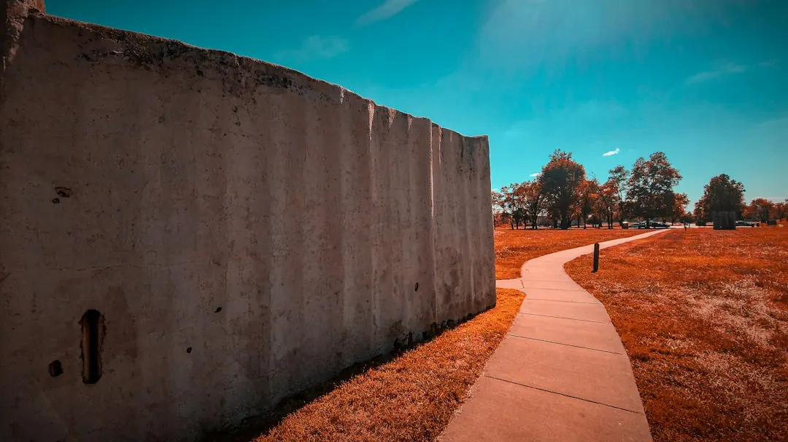

A supplied and installed concrete sleeper wall is guided at about $250 to $650 or more per square metre of wall face in 2026 Australian price guides. A one metre wall on the Gold Coast is roughly $295 to $590 per lineal metre, with $440 described as typical. Engineering and certification, where needed, are roughly $500 to $2,000 per job. Access, height, drainage, footings and engineering can change the final quote.
For homeowners comparing concrete sleeper retaining walls gold coast options, the practical decision comes down to wall purpose, site conditions, drainage, approval requirements and the information included in each quote.
Concrete Sleeper Retaining Walls Gold Coast Explained
The Concrete Sleeper Retaining Walls Gold Coast guide identifies several common projects: levelling a sloping block, replacing a tired timber wall, creating a boundary wall, forming a lawn or garden bed, and retaining soil near a new slab. State the purpose first, because the finished height, retained material and nearby loads affect the design conversation.
Concrete sleepers are precast sections that slot between hot-dip galvanised steel posts concreted into the ground. The described sizes include sleepers about 200 mm high and 75 mm or more thick, in 1.6 metre, 2.0 metre and 2.4 metre lengths. A replacement quote should identify removal and disposal of the existing wall separately.
- A boundary wall may support a Colorbond fence or serve as an under-fence plinth.
- A taller wall may need engineering and building approval.
- A wall carrying an extra load needs that condition discussed before pricing.
Compare the price behind the headline
The 2026 guide gives a supplied and installed rate of about $250 to $650 or more per square metre of wall face. For a one metre high wall on the Gold Coast, it gives roughly $295 to $590 per lineal metre installed, with $440 described as typical. These are indicative figures, not a quote for a particular site.
Ask for the cost of sleepers and posts to be separated from excavation, footings, drainage, machinery access, engineering, certification, demolition and reinstatement. Site access, wall height and soil conditions can change the total. Engineering design and certification, where needed, are guided at roughly $500 to $2,000 per job.
Finish is another choice to record in writing. The options described include charcoal, timber-look and sandstone. Plain grey sleepers can be painted with exterior masonry paint.
Resolve drainage and boundary questions
The construction description includes drainage behind the wall: a slotted agricultural pipe at the base, clean gravel and geotextile fabric, with the pipe falling to an approved outlet. Ask where water will discharge and whether the quote includes the pipe, gravel, fabric and outlet work.
Boundary work needs accurate placement and a clear interface with fencing. Confirm the boundary position, finished levels, excavation access and who will handle neighbour discussions. If a Colorbond fence will sit above the wall, include its posts, connection details and any under-fence plinths in the scope.
For a timber replacement, ask what will happen to the old structure and disturbed ground. The guide says treated pine sleeper walls typically last around 15 to 25 years depending on drainage and soil, while concrete sleepers do not rot. The quote should explain removal and reinstatement rather than treating them as assumed extras.
Check approval and pre-start requirements
The guide describes retaining walls as regulated building work in Queensland. It states that building work valued over $3,300, including most retaining walls, must be carried out by a QBCC-licensed contractor, typically under a structural landscaping or builder licence class. Ask for the relevant licence details before accepting the work.
Approval depends on the proposed wall and its surroundings. Taller walls, or walls carrying extra load, may need building approval and an engineer's design. Where approval is required, a building certifier issues it before work begins. Where engineering is needed, the design must be done or directly supervised by a Registered Professional Engineer of Queensland.
Before post holes are installed, the guide recommends a free Before You Dig Australia enquiry to check for underground pipes and cables. Add the planned height, nearby structures and drainage outlet to the pre-start discussion.
Make the written quote comparable
Give the installer the suburb, approximate wall length and height, what the wall holds back, whether an old wall is being removed and any access limitations. The guide says photos are not needed for the initial enquiry, although a site discussion may be required before a firm price is set.
Check that each written scope identifies the sleeper size, finish and galvanised post system; excavation and footings; machinery access; drainage and outlet arrangements; engineering, certification and approval tasks; removal of existing materials; and reinstatement. Ask separately about the expected project timeline and any warranty terms offered in writing.
For a second locally focused comparison of the construction topic, see the related Gold Coast concrete sleeper wall guide.
- Describe the site. Provide the suburb, approximate length and height, retained material, existing-wall details and access information.
- Confirm the design path. Ask whether drainage, engineering, certification or building approval is needed for the proposed wall.
- Compare written scopes. Check that materials, excavation, drainage, approvals, removal and reinstatement are treated consistently across quotes.
- Complete pre-start checks. Confirm the outlet plan and lodge a Before You Dig Australia enquiry before post holes are installed.
| Project situation | Questions to resolve | Likely quote variables |
|---|---|---|
| Sloping block or new level area | What soil is being held back and where can drainage discharge? | Height, excavation, access and drainage |
| Replacing timber sleepers | Is removal included and what condition is the existing wall in? | Demolition, ground condition and reinstatement |
| Boundary wall or fence plinth | Where is the boundary and will a Colorbond fence sit above it? | Fence interface, access and neighbour discussion |
| Taller or loaded wall | Is engineering or building approval required before work starts? | Engineering, certification, footings and extra load |
Common questions
What does a concrete sleeper retaining wall cost on the Gold Coast? The 2026 guide gives roughly $295 to $590 per lineal metre installed for a one metre high wall, with $440 described as typical. It also gives about $250 to $650 or more per square metre of wall face.
What drainage is described behind the wall? The guide describes a slotted agricultural pipe, clean gravel and geotextile fabric behind the wall, falling to an approved outlet. Ask for each item to appear in the written scope.
Will a retaining wall need approval? Taller walls and walls carrying extra load may need building approval and an engineer's design. A building certifier is involved where approval is required.
What information helps with a quote? Provide the suburb, rough length and height, what the wall holds back, whether an old wall is being removed and any access information. Photos are not needed for the initial enquiry described in the guide.
When is engineering mentioned? Engineering is identified for taller walls or walls carrying extra loads. The guide gives roughly $500 to $2,000 per job for design and certification where needed.
This guide covers sleeper wall choices, indicative 2026 costs, drainage, approvals, engineering and quote questions for Gold Coast sites.